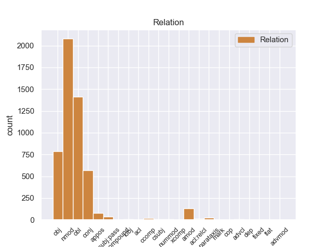
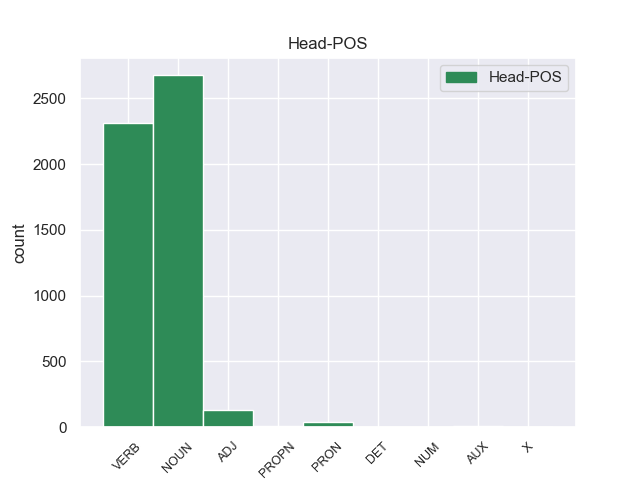
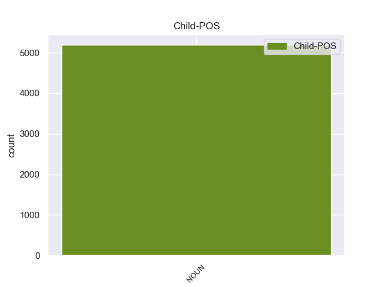

Distribution of features within this leaf



Agreement Rules sorted by frequency.
- When the dependent token is the nominal modifier(nmod) of the head token, and the dependent token is NOUN.
1 Ευελπιστώ _ _ _ _ 0 _ _ _
2 ότι _ _ _ _ 0 _ _ _
3 η _ _ _ _ 0 _ _ _
4 απόφαση _ _ _ _ 0 _ _ _
5 αυτή _ _ _ _ 0 _ _ _
6 , _ _ _ _ 0 _ _ _
7 συμπεριλαμβανομένης συμπεριλαμβανομένηo ADJ _ Gender=Fem|Number=Sing|VerbForm=Part 0 _ _ _
8 και _ _ _ _ 0 _ _ _
9 της _ _ _ _ 0 _ _ _
10 αιτιολογικής _ _ _ _ 0 _ _ _
11 έκθεσης έκθεσης NOUN _ Gender=Fem|Number=Sing 7 nmod _ _
12 που _ _ _ _ 0 _ _ _
13 την _ _ _ _ 0 _ _ _
14 συνοδεύει _ _ _ _ 0 _ _ _
15 , _ _ _ _ 0 _ _ _
16 θα _ _ _ _ 0 _ _ _
17 διαβιβαστεί _ _ _ _ 0 _ _ _
18 σ _ _ _ _ 0 _ _ _
19 τις _ _ _ _ 0 _ _ _
20 γαλλικές _ _ _ _ 0 _ _ _
21 αρχές _ _ _ _ 0 _ _ _
22 , _ _ _ _ 0 _ _ _
23 εφόσον _ _ _ _ 0 _ _ _
24 υπερψηφιστεί _ _ _ _ 0 _ _ _
25 από _ _ _ _ 0 _ _ _
26 το _ _ _ _ 0 _ _ _
27 Κοινοβούλιο _ _ _ _ 0 _ _ _
28 . _ _ _ _ 0 _ _ _
1 Σ _ _ _ _ 0 _ _ _
2 την _ _ _ _ 0 _ _ _
3 παρούσα _ _ _ _ 0 _ _ _
4 μορφή μορφή NOUN _ Gender=Fem|Number=Sing 12 obl _ _
5 της _ _ _ _ 0 _ _ _
6 , _ _ _ _ 0 _ _ _
7 η _ _ _ _ 0 _ _ _
8 αίτηση _ _ _ _ 0 _ _ _
9 άρσης _ _ _ _ 0 _ _ _
10 της _ _ _ _ 0 _ _ _
11 ασυλίας _ _ _ _ 0 _ _ _
12 παρουσιάζεται παρουσιάζετer VERB _ Mood=Ind|Number=Sing|Person=3|Tense=Pres|VerbForm=Fin 0 _ _ _
13 απαράδεκτα _ _ _ _ 0 _ _ _
14 ασαφής _ _ _ _ 0 _ _ _
15 . _ _ _ _ 0 _ _ _
1 Υπάρχει _ _ _ _ 0 _ _ _
2 μια _ _ _ _ 0 _ _ _
3 άλλη _ _ _ _ 0 _ _ _
4 πλευρά _ _ _ _ 0 _ _ _
5 της _ _ _ _ 0 _ _ _
6 υπόθεσης _ _ _ _ 0 _ _ _
7 , _ _ _ _ 0 _ _ _
8 η _ _ _ _ 0 _ _ _
9 οποία _ _ _ _ 0 _ _ _
10 , _ _ _ _ 0 _ _ _
11 δυστυχώς _ _ _ _ 0 _ _ _
12 , _ _ _ _ 0 _ _ _
13 γεννά _ _ _ _ 0 _ _ _
14 την _ _ _ _ 0 _ _ _
15 υποψία _ _ _ _ 0 _ _ _
16 ότι _ _ _ _ 0 _ _ _
17 η _ _ _ _ 0 _ _ _
18 πρόνοια _ _ _ _ 0 _ _ _
19 σχετικά _ _ _ _ 0 _ _ _
20 με _ _ _ _ 0 _ _ _
21 τις _ _ _ _ 0 _ _ _
22 προϋποθέσεις _ _ _ _ 0 _ _ _
23 ελεύθερης _ _ _ _ 0 _ _ _
24 διεξαγωγής _ _ _ _ 0 _ _ _
25 του _ _ _ _ 0 _ _ _
26 κοινοβουλευτικού _ _ _ _ 0 _ _ _
27 έργου _ _ _ _ 0 _ _ _
28 δεν _ _ _ _ 0 _ _ _
29 απασχόλησε απασχόληr VERB _ Mood=Ind|Number=Sing|Person=3|Tense=Past|VerbForm=Fin 0 _ _ _
30 επαρκώς _ _ _ _ 0 _ _ _
31 την _ _ _ _ 0 _ _ _
32 εισαγγελική _ _ _ _ 0 _ _ _
33 αρχή αρχή NOUN _ Gender=Fem|Number=Sing 29 obj _ _
34 : _ _ _ _ 0 _ _ _
1 από _ _ _ _ 0 _ _ _
2 τα _ _ _ _ 0 _ _ _
3 δε _ _ _ _ 0 _ _ _
4 έγγραφα _ _ _ _ 0 _ _ _
5 της _ _ _ _ 0 _ _ _
6 υπόθεσης _ _ _ _ 0 _ _ _
7 προκύπτει _ _ _ _ 0 _ _ _
8 ότι _ _ _ _ 0 _ _ _
9 δεν _ _ _ _ 0 _ _ _
10 φαίνεται _ _ _ _ 0 _ _ _
11 να _ _ _ _ 0 _ _ _
12 έχει _ _ _ _ 0 _ _ _
13 ληφθεί _ _ _ _ 0 _ _ _
14 υπόψη _ _ _ _ 0 _ _ _
15 η _ _ _ _ 0 _ _ _
16 σύσταση _ _ _ _ 0 _ _ _
17 να _ _ _ _ 0 _ _ _
18 διαβιβαστεί _ _ _ _ 0 _ _ _
19 η _ _ _ _ 0 _ _ _
20 αίτηση _ _ _ _ 0 _ _ _
21 άρσης _ _ _ _ 0 _ _ _
22 της _ _ _ _ 0 _ _ _
23 ασυλίας _ _ _ _ 0 _ _ _
24 μόνον _ _ _ _ 0 _ _ _
25 επί _ _ _ _ 0 _ _ _
26 τη _ _ _ _ 0 _ _ _
27 βάσει _ _ _ _ 0 _ _ _
28 ακριβέστερου _ _ _ _ 0 _ _ _
29 προσδιορισμού _ _ _ _ 0 _ _ _
30 όσον _ _ _ _ 0 _ _ _
31 αφορά _ _ _ _ 0 _ _ _
32 τους _ _ _ _ 0 _ _ _
33 τόπους τόπου NOUN _ Gender=Masc|Number=Plur 0 _ _ _
34 και _ _ _ _ 0 _ _ _
35 τα _ _ _ _ 0 _ _ _
36 πρόσωπα πρόσωπ NOUN _ Gender=Masc|Number=Plur 33 conj _ _
37 που _ _ _ _ 0 _ _ _
38 εμπλέκονται _ _ _ _ 0 _ _ _
39 σ _ _ _ _ 0 _ _ _
40 την _ _ _ _ 0 _ _ _
41 υπόθεση _ _ _ _ 0 _ _ _
42 . _ _ _ _ 0 _ _ _
1 Θα _ _ _ _ 0 _ _ _
2 ήθελα _ _ _ _ 0 _ _ _
3 να _ _ _ _ 0 _ _ _
4 επιστήσω _ _ _ _ 0 _ _ _
5 την _ _ _ _ 0 _ _ _
6 προσοχή _ _ _ _ 0 _ _ _
7 όλων _ _ _ _ 0 _ _ _
8 των _ _ _ _ 0 _ _ _
9 συναδέλφων _ _ _ _ 0 _ _ _
10 σ _ _ _ _ 0 _ _ _
11 το _ _ _ _ 0 _ _ _
12 γεγονός _ _ _ _ 0 _ _ _
13 ότι _ _ _ _ 0 _ _ _
14 , _ _ _ _ 0 _ _ _
15 εάν _ _ _ _ 0 _ _ _
16 υπάρχουν _ _ _ _ 0 _ _ _
17 κάποιες _ _ _ _ 0 _ _ _
18 ελευθερίες _ _ _ _ 0 _ _ _
19 οι _ _ _ _ 0 _ _ _
20 οποίες _ _ _ _ 0 _ _ _
21 είναι _ _ _ _ 0 _ _ _
22 ζωτικής _ _ _ _ 0 _ _ _
23 σημασίας _ _ _ _ 0 _ _ _
24 για _ _ _ _ 0 _ _ _
25 την _ _ _ _ 0 _ _ _
26 άσκηση _ _ _ _ 0 _ _ _
27 του _ _ _ _ 0 _ _ _
28 λειτουργήματος _ _ _ _ 0 _ _ _
29 της _ _ _ _ 0 _ _ _
30 δημόσιας δημόσιαo NOUN _ Gender=Fem|Number=Sing 31 amod _ _
31 εκπροσώπησης εκπροσώπησης NOUN _ Gender=Fem|Number=Sing 0 _ _ _
32 , _ _ _ _ 0 _ _ _
33 ιδίως _ _ _ _ 0 _ _ _
34 για _ _ _ _ 0 _ _ _
35 ένα _ _ _ _ 0 _ _ _
36 Κοινοβούλιο _ _ _ _ 0 _ _ _
37 σαν _ _ _ _ 0 _ _ _
38 το _ _ _ _ 0 _ _ _
39 δικό _ _ _ _ 0 _ _ _
40 μας _ _ _ _ 0 _ _ _
41 , _ _ _ _ 0 _ _ _
42 η _ _ _ _ 0 _ _ _
43 ελευθερία _ _ _ _ 0 _ _ _
44 της _ _ _ _ 0 _ _ _
45 επικοινωνίας _ _ _ _ 0 _ _ _
46 με _ _ _ _ 0 _ _ _
47 άλλους _ _ _ _ 0 _ _ _
48 πολίτες _ _ _ _ 0 _ _ _
49 και _ _ _ _ 0 _ _ _
50 με _ _ _ _ 0 _ _ _
51 τους _ _ _ _ 0 _ _ _
52 πολίτες _ _ _ _ 0 _ _ _
53 τρίτων _ _ _ _ 0 _ _ _
54 χωρών _ _ _ _ 0 _ _ _
55 , _ _ _ _ 0 _ _ _
56 καθώς _ _ _ _ 0 _ _ _
57 και _ _ _ _ 0 _ _ _
58 η _ _ _ _ 0 _ _ _
59 ελευθερία _ _ _ _ 0 _ _ _
60 μετακίνησης _ _ _ _ 0 _ _ _
61 , _ _ _ _ 0 _ _ _
62 είναι _ _ _ _ 0 _ _ _
63 κρίσιμες _ _ _ _ 0 _ _ _
64 για _ _ _ _ 0 _ _ _
65 τη _ _ _ _ 0 _ _ _
66 διεκπεραίωση _ _ _ _ 0 _ _ _
67 του _ _ _ _ 0 _ _ _
68 έργου _ _ _ _ 0 _ _ _
69 μας _ _ _ _ 0 _ _ _
70 . _ _ _ _ 0 _ _ _
1 Πρόκειται _ _ _ _ 0 _ _ _
2 για _ _ _ _ 0 _ _ _
3 την _ _ _ _ 0 _ _ _
4 πώληση _ _ _ _ 0 _ _ _
5 όπλων _ _ _ _ 0 _ _ _
6 σε _ _ _ _ 0 _ _ _
7 ορισμένες _ _ _ _ 0 _ _ _
8 αφρικανικές _ _ _ _ 0 _ _ _
9 χώρες _ _ _ _ 0 _ _ _
10 , _ _ _ _ 0 _ _ _
11 κατά _ _ _ _ 0 _ _ _
12 παράβαση _ _ _ _ 0 _ _ _
13 της _ _ _ _ 0 _ _ _
14 γαλλικής _ _ _ _ 0 _ _ _
15 νομοθεσίας _ _ _ _ 0 _ _ _
16 περί _ _ _ _ 0 _ _ _
17 εμπορίου _ _ _ _ 0 _ _ _
18 όπλων _ _ _ _ 0 _ _ _
19 , _ _ _ _ 0 _ _ _
20 από _ _ _ _ 0 _ _ _
21 εταιρείες _ _ _ _ 0 _ _ _
22 μέσω _ _ _ _ 0 _ _ _
23 των _ _ _ _ 0 _ _ _
24 οποίων _ _ _ _ 0 _ _ _
25 πραγματοποιήθηκαν _ _ _ _ 0 _ _ _
26 αναρίθμητες _ _ _ _ 0 _ _ _
27 μεταφορές μεταφορέ NOUN _ Gender=Masc|Number=Plur 0 _ _ _
28 ποσών ποσώ NOUN _ Gender=Masc|Number=Plur 27 appos _ _
29 ή _ _ _ _ 0 _ _ _
30 ακόμα _ _ _ _ 0 _ _ _
31 και _ _ _ _ 0 _ _ _
32 πληρωμές _ _ _ _ 0 _ _ _
33 σε _ _ _ _ 0 _ _ _
34 ρευστό _ _ _ _ 0 _ _ _
35 , _ _ _ _ 0 _ _ _
36 σε _ _ _ _ 0 _ _ _
37 μια _ _ _ _ 0 _ _ _
38 σειρά _ _ _ _ 0 _ _ _
39 διαφόρων _ _ _ _ 0 _ _ _
40 προσώπων _ _ _ _ 0 _ _ _
41 . _ _ _ _ 0 _ _ _
1 Ο _ _ _ _ 0 _ _ _
2 αλ αλ NOUN _ Gender=Masc|Number=Sing 5 nsubj:pass _ _
3 Σενούσι _ _ _ _ 0 _ _ _
4 έχει _ _ _ _ 0 _ _ _
5 καταδικαστεί καταδικαστr VERB _ Gender=Masc|Number=Sing|Tense=Past|VerbForm=Part 0 _ _ _
6 σε _ _ _ _ 0 _ _ _
7 ισόβια _ _ _ _ 0 _ _ _
8 κάθειρξη _ _ _ _ 0 _ _ _
9 λόγω _ _ _ _ 0 _ _ _
10 συμμετοχής _ _ _ _ 0 _ _ _
11 του _ _ _ _ 0 _ _ _
12 , _ _ _ _ 0 _ _ _
13 το _ _ _ _ 0 _ _ _
14 1989 _ _ _ _ 0 _ _ _
15 , _ _ _ _ 0 _ _ _
16 σε _ _ _ _ 0 _ _ _
17 επίθεση _ _ _ _ 0 _ _ _
18 κατά _ _ _ _ 0 _ _ _
19 γαλλικού _ _ _ _ 0 _ _ _
20 αεροσκάφους _ _ _ _ 0 _ _ _
21 , _ _ _ _ 0 _ _ _
22 κατά _ _ _ _ 0 _ _ _
23 την _ _ _ _ 0 _ _ _
24 οποία _ _ _ _ 0 _ _ _
25 σκοτώθηκαν _ _ _ _ 0 _ _ _
26 170 _ _ _ _ 0 _ _ _
27 άνθρωποι _ _ _ _ 0 _ _ _
28 . _ _ _ _ 0 _ _ _
1 Από _ _ _ _ 0 _ _ _
2 την _ _ _ _ 0 _ _ _
3 στιγμή _ _ _ _ 0 _ _ _
4 που _ _ _ _ 0 _ _ _
5 θα _ _ _ _ 0 _ _ _
6 έχει _ _ _ _ 0 _ _ _
7 εγκριθεί _ _ _ _ 0 _ _ _
8 , _ _ _ _ 0 _ _ _
9 η _ _ _ _ 0 _ _ _
10 οδηγία _ _ _ _ 0 _ _ _
11 θα _ _ _ _ 0 _ _ _
12 συμπληρώσει συμπληρώσεar VERB _ Mood=Ind|Number=Sing|Person=3|Tense=Pres|VerbForm=Fin 0 _ _ _
13 το _ _ _ _ 0 _ _ _
14 κοινοτικό _ _ _ _ 0 _ _ _
15 πλαίσιο _ _ _ _ 0 _ _ _
16 σ _ _ _ _ 0 _ _ _
17 τον _ _ _ _ 0 _ _ _
18 τομέα _ _ _ _ 0 _ _ _
19 της _ _ _ _ 0 _ _ _
20 πληροφόρησης _ _ _ _ 0 _ _ _
21 και _ _ _ _ 0 _ _ _
22 της _ _ _ _ 0 _ _ _
23 διαβούλευσης _ _ _ _ 0 _ _ _
24 των _ _ _ _ 0 _ _ _
25 εργαζομένων _ _ _ _ 0 _ _ _
26 , _ _ _ _ 0 _ _ _
27 ένα _ _ _ _ 0 _ _ _
28 πλαίσιο πλαίσιο NOUN _ Gender=Masc|Number=Sing 12 parataxis _ _
29 το _ _ _ _ 0 _ _ _
30 οποίο _ _ _ _ 0 _ _ _
31 παρέχει _ _ _ _ 0 _ _ _
32 σ _ _ _ _ 0 _ _ _
33 τις _ _ _ _ 0 _ _ _
34 ευρωπαϊκές _ _ _ _ 0 _ _ _
35 επιχειρήσεις _ _ _ _ 0 _ _ _
36 και _ _ _ _ 0 _ _ _
37 σ _ _ _ _ 0 _ _ _
38 τους _ _ _ _ 0 _ _ _
39 εργαζομένους _ _ _ _ 0 _ _ _
40 σε _ _ _ _ 0 _ _ _
41 αυτές _ _ _ _ 0 _ _ _
42 ένα _ _ _ _ 0 _ _ _
43 ουσιαστικό _ _ _ _ 0 _ _ _
44 εργαλείο _ _ _ _ 0 _ _ _
45 που _ _ _ _ 0 _ _ _
46 θα _ _ _ _ 0 _ _ _
47 διευκολύνει _ _ _ _ 0 _ _ _
48 την _ _ _ _ 0 _ _ _
49 αλλαγή _ _ _ _ 0 _ _ _
50 και _ _ _ _ 0 _ _ _
51 θα _ _ _ _ 0 _ _ _
52 διασφαλίσει _ _ _ _ 0 _ _ _
53 τη _ _ _ _ 0 _ _ _
54 συνέχειά _ _ _ _ 0 _ _ _
55 της _ _ _ _ 0 _ _ _
56 με _ _ _ _ 0 _ _ _
57 κοινωνικά _ _ _ _ 0 _ _ _
58 αποδεκτό _ _ _ _ 0 _ _ _
59 τρόπο _ _ _ _ 0 _ _ _
60 . _ _ _ _ 0 _ _ _
1 Ο _ _ _ _ 0 _ _ _
2 Αμερικανός _ _ _ _ 0 _ _ _
3 Πρόεδρος _ _ _ _ 0 _ _ _
4 τόνισε τόνισar VERB _ Mood=Ind|Number=Sing|Person=3|Tense=Past|VerbForm=Fin 0 _ _ _
5 « _ _ _ _ 0 _ _ _
6 ότι _ _ _ _ 0 _ _ _
7 τώρα _ _ _ _ 0 _ _ _
8 δεν _ _ _ _ 0 _ _ _
9 είναι _ _ _ _ 0 _ _ _
10 η _ _ _ _ 0 _ _ _
11 ώρα ώρα NOUN _ Gender=Fem|Number=Sing 4 ccomp _ _
12 για _ _ _ _ 0 _ _ _
13 θεαματικές _ _ _ _ 0 _ _ _
14 κινήσεις _ _ _ _ 0 _ _ _
15 , _ _ _ _ 0 _ _ _
16 αλλά _ _ _ _ 0 _ _ _
17 είναι _ _ _ _ 0 _ _ _
18 καιρός _ _ _ _ 0 _ _ _
19 για _ _ _ _ 0 _ _ _
20 αύξηση _ _ _ _ 0 _ _ _
21 πίεσης _ _ _ _ 0 _ _ _
22 και _ _ _ _ 0 _ _ _
23 διατήρηση _ _ _ _ 0 _ _ _
24 μιας _ _ _ _ 0 _ _ _
25 ευρείας _ _ _ _ 0 _ _ _
26 διεθνούς _ _ _ _ 0 _ _ _
27 συμμαχίας _ _ _ _ 0 _ _ _
28 κατά _ _ _ _ 0 _ _ _
29 της _ _ _ _ 0 _ _ _
30 απόκτησης _ _ _ _ 0 _ _ _
31 πυρηνικού _ _ _ _ 0 _ _ _
32 οπλοστασίου _ _ _ _ 0 _ _ _
33 από _ _ _ _ 0 _ _ _
34 το _ _ _ _ 0 _ _ _
35 Ιράν _ _ _ _ 0 _ _ _
36 » _ _ _ _ 0 _ _ _
37 . _ _ _ _ 0 _ _ _
1 Δεκάδες _ _ _ _ 0 _ _ _
2 χιλιάδες χιλιάδε NOUN _ Number=Plur|NumType=Card 3 nummod _ _
3 πολίτες πολίτε NOUN _ Gender=Masc|Number=Plur 0 _ _ _
4 έμειναν _ _ _ _ 0 _ _ _
5 χωρίς _ _ _ _ 0 _ _ _
6 ηλεκτρικό _ _ _ _ 0 _ _ _
7 ρεύμα _ _ _ _ 0 _ _ _
8 την _ _ _ _ 0 _ _ _
9 Τρίτη _ _ _ _ 0 _ _ _
10 , _ _ _ _ 0 _ _ _
11 ενώ _ _ _ _ 0 _ _ _
12 τα _ _ _ _ 0 _ _ _
13 σωστικά _ _ _ _ 0 _ _ _
14 συνεργεία _ _ _ _ 0 _ _ _
15 έδιναν _ _ _ _ 0 _ _ _
16 μάχη _ _ _ _ 0 _ _ _
17 με _ _ _ _ 0 _ _ _
18 τον _ _ _ _ 0 _ _ _
19 χρόνο _ _ _ _ 0 _ _ _
20 για _ _ _ _ 0 _ _ _
21 τη _ _ _ _ 0 _ _ _
22 διάσωση _ _ _ _ 0 _ _ _
23 ανθρώπων _ _ _ _ 0 _ _ _
24 . _ _ _ _ 0 _ _ _
1 " _ _ _ _ 0 _ _ _
2 Η _ _ _ _ 0 _ _ _
3 Ουκρανία _ _ _ _ 0 _ _ _
4 είναι _ _ _ _ 0 _ _ _
5 νέο _ _ _ _ 0 _ _ _
6 κράτος κράτος NOUN _ Gender=Masc|Number=Sing 9 csubj _ _
7 " _ _ _ _ 0 _ _ _
8 , _ _ _ _ 0 _ _ _
9 δηλώνει δηλώνειr VERB _ Mood=Ind|Number=Sing|Person=3|Tense=Past|VerbForm=Fin 0 _ _ _
10 ο _ _ _ _ 0 _ _ _
11 Αμπντουραμάν _ _ _ _ 0 _ _ _
12 Εγκίζ _ _ _ _ 0 _ _ _
13 του _ _ _ _ 0 _ _ _
14 κόμματος _ _ _ _ 0 _ _ _
15 Μετζλίς _ _ _ _ 0 _ _ _
16 για _ _ _ _ 0 _ _ _
17 τους _ _ _ _ 0 _ _ _
18 Τατάρους _ _ _ _ 0 _ _ _
19 της _ _ _ _ 0 _ _ _
20 Κριμαίας _ _ _ _ 0 _ _ _
21 , _ _ _ _ 0 _ _ _
22 " _ _ _ _ 0 _ _ _
23 για _ _ _ _ 0 _ _ _
24 όλες _ _ _ _ 0 _ _ _
25 τις _ _ _ _ 0 _ _ _
26 μειονότητες _ _ _ _ 0 _ _ _
27 που _ _ _ _ 0 _ _ _
28 ζουν _ _ _ _ 0 _ _ _
29 σ _ _ _ _ 0 _ _ _
30 την _ _ _ _ 0 _ _ _
31 Κριμαία _ _ _ _ 0 _ _ _
32 , _ _ _ _ 0 _ _ _
33 γυρίσαμε _ _ _ _ 0 _ _ _
34 μια _ _ _ _ 0 _ _ _
35 νέα _ _ _ _ 0 _ _ _
36 σελίδα _ _ _ _ 0 _ _ _
37 " _ _ _ _ 0 _ _ _
38 . _ _ _ _ 0 _ _ _
1 Η _ _ _ _ 0 _ _ _
2 Βόρεια _ _ _ _ 0 _ _ _
3 Κορέα _ _ _ _ 0 _ _ _
4 επέτρεψε _ _ _ _ 0 _ _ _
5 σε _ _ _ _ 0 _ _ _
6 μια _ _ _ _ 0 _ _ _
7 μικρή _ _ _ _ 0 _ _ _
8 ομάδα _ _ _ _ 0 _ _ _
9 Αμερικανών _ _ _ _ 0 _ _ _
10 να _ _ _ _ 0 _ _ _
11 έρθουν _ _ _ _ 0 _ _ _
12 σε _ _ _ _ 0 _ _ _
13 επαφή _ _ _ _ 0 _ _ _
14 με _ _ _ _ 0 _ _ _
15 τον _ _ _ _ 0 _ _ _
16 μικρό _ _ _ _ 0 _ _ _
17 αριθμό αριθμό NOUN _ Gender=Masc|Number=Sing 0 _ _ _
18 ατόμων _ _ _ _ 0 _ _ _
19 που _ _ _ _ 0 _ _ _
20 έχουν _ _ _ _ 0 _ _ _
21 πρόσβαση πρόσβαση NOUN _ Gender=Fem|Number=Sing 17 acl:relcl _ _
22 σ _ _ _ _ 0 _ _ _
23 το _ _ _ _ 0 _ _ _
24 διαδίκτυο _ _ _ _ 0 _ _ _
25 σ _ _ _ _ 0 _ _ _
26 την _ _ _ _ 0 _ _ _
27 αυστηρά _ _ _ _ 0 _ _ _
28 ελεγχόμενη _ _ _ _ 0 _ _ _
29 ασιάτικη _ _ _ _ 0 _ _ _
30 χώρα _ _ _ _ 0 _ _ _
31 . _ _ _ _ 0 _ _ _
1 Οι _ _ _ _ 0 _ _ _
2 διαπραγματεύσεις _ _ _ _ 0 _ _ _
3 δεν _ _ _ _ 0 _ _ _
4 ήταν _ _ _ _ 0 _ _ _
5 επιτυχείς _ _ _ _ 0 _ _ _
6 και _ _ _ _ 0 _ _ _
7 οι _ _ _ _ 0 _ _ _
8 εργολάβοι _ _ _ _ 0 _ _ _
9 έδωσαν έδr VERB _ Mood=Ind|Number=Plur|Person=3|Tense=Past|VerbForm=Fin 0 _ _ _
10 εντολή _ _ _ _ 0 _ _ _
11 σ _ _ _ _ 0 _ _ _
12 τους _ _ _ _ 0 _ _ _
13 εκσκαφείς εκσκαφεί NOUN _ Gender=Masc|Number=Plur 9 iobj _ _
14 να _ _ _ _ 0 _ _ _
15 ανοίξουν _ _ _ _ 0 _ _ _
16 μεγάλα _ _ _ _ 0 _ _ _
17 χαντάκια _ _ _ _ 0 _ _ _
18 γύρω _ _ _ _ 0 _ _ _
19 από _ _ _ _ 0 _ _ _
20 τις _ _ _ _ 0 _ _ _
21 παλαιές _ _ _ _ 0 _ _ _
22 κατοικίες _ _ _ _ 0 _ _ _
23 , _ _ _ _ 0 _ _ _
24 οι _ _ _ _ 0 _ _ _
25 οποίες _ _ _ _ 0 _ _ _
26 και _ _ _ _ 0 _ _ _
27 γέμισαν _ _ _ _ 0 _ _ _
28 με _ _ _ _ 0 _ _ _
29 νερό _ _ _ _ 0 _ _ _
30 από _ _ _ _ 0 _ _ _
31 παρακείμενο _ _ _ _ 0 _ _ _
32 ποταμό _ _ _ _ 0 _ _ _
33 . _ _ _ _ 0 _ _ _
1 Η _ _ _ _ 0 _ _ _
2 πρόταση _ _ _ _ 0 _ _ _
3 αυτή _ _ _ _ 0 _ _ _
4 απορρίφθηκε απορρίφθηκar VERB _ Mood=Ind|Number=Sing|Person=3|Tense=Past|VerbForm=Fin 0 _ _ _
5 καθώς _ _ _ _ 0 _ _ _
6 θεωρήθηκε _ _ _ _ 0 _ _ _
7 εμπαιγμός εμπαιγμός NOUN _ Gender=Masc|Number=Sing 4 advcl _ _
8 και _ _ _ _ 0 _ _ _
9 για _ _ _ _ 0 _ _ _
10 τους _ _ _ _ 0 _ _ _
11 Κρητικούς _ _ _ _ 0 _ _ _
12 και _ _ _ _ 0 _ _ _
13 για _ _ _ _ 0 _ _ _
14 τις _ _ _ _ 0 _ _ _
15 Μεγάλες _ _ _ _ 0 _ _ _
16 Δυνάμεις _ _ _ _ 0 _ _ _
17 . _ _ _ _ 0 _ _ _
1 Σ _ _ _ _ 0 _ _ _
2 την _ _ _ _ 0 _ _ _
3 παραλία _ _ _ _ 0 _ _ _
4 , _ _ _ _ 0 _ _ _
5 οι _ _ _ _ 0 _ _ _
6 λάτρεις _ _ _ _ 0 _ _ _
7 των _ _ _ _ 0 _ _ _
8 θαλάσσιων _ _ _ _ 0 _ _ _
9 σπορ _ _ _ _ 0 _ _ _
10 μπορούν _ _ _ _ 0 _ _ _
11 να _ _ _ _ 0 _ _ _
12 κάνουν _ _ _ _ 0 _ _ _
13 θαλάσσιο _ _ _ _ 0 _ _ _
14 ski _ _ _ _ 0 _ _ _
15 , _ _ _ _ 0 _ _ _
16 jet jet NOUN _ Gender=Masc|Number=Sing 0 _ _ _
17 ski ski NOUN _ Gender=Masc|Number=Sing 16 flat _ _
18 , _ _ _ _ 0 _ _ _
19 wind _ _ _ _ 0 _ _ _
20 surfing _ _ _ _ 0 _ _ _
21 , _ _ _ _ 0 _ _ _
22 αλεξίπτωτο _ _ _ _ 0 _ _ _
23 , _ _ _ _ 0 _ _ _
24 καταδύσεις _ _ _ _ 0 _ _ _
25 , _ _ _ _ 0 _ _ _
26 καθώς _ _ _ _ 0 _ _ _
27 και _ _ _ _ 0 _ _ _
28 να _ _ _ _ 0 _ _ _
29 ενοικιάσουν _ _ _ _ 0 _ _ _
30 σκάφη _ _ _ _ 0 _ _ _
31 αναψυχής _ _ _ _ 0 _ _ _
32 . _ _ _ _ 0 _ _ _
1 Yo _ _ _ _ 0 _ _ _
2 acudo _ _ _ _ 0 _ _ _
3 a _ _ _ _ 0 _ _ _
4 esta _ _ _ _ 0 _ _ _
5 clinica _ _ _ _ 0 _ _ _
6 , _ _ _ _ 0 _ _ _
7 lo él PRON _ Case=Acc|Gender=Masc|Number=Sing|Person=3|PrepCase=Npr|PronType=Prs 0 _ _ _
8 considero _ _ _ _ 0 _ _ _
9 un _ _ _ _ 0 _ _ _
10 buen _ _ _ _ 0 _ _ _
11 profesional profesional NOUN _ Number=Sing 7 acl _ SpaceAfter=No
12 , _ _ _ _ 0 _ _ _
13 se _ _ _ _ 0 _ _ _
14 molesta _ _ _ _ 0 _ _ _
15 en _ _ _ _ 0 _ _ _
16 explicar _ _ _ _ 0 _ _ _
17 me _ _ _ _ 0 _ _ _
18 lo _ _ _ _ 0 _ _ _
19 que _ _ _ _ 0 _ _ _
20 va _ _ _ _ 0 _ _ _
21 a _ _ _ _ 0 _ _ _
22 hacer _ _ _ _ 0 _ _ _
23 y _ _ _ _ 0 _ _ _
24 las _ _ _ _ 0 _ _ _
25 opciones _ _ _ _ 0 _ _ _
26 que _ _ _ _ 0 _ _ _
27 tengo _ _ _ _ 0 _ _ _
28 para _ _ _ _ 0 _ _ _
29 dicho _ _ _ _ 0 _ _ _
30 tratamiento _ _ _ _ 0 _ _ _
31 , _ _ _ _ 0 _ _ _
32 el _ _ _ _ 0 _ _ _
33 hecho _ _ _ _ 0 _ _ _
34 que _ _ _ _ 0 _ _ _
35 cuente _ _ _ _ 0 _ _ _
36 también _ _ _ _ 0 _ _ _
37 con _ _ _ _ 0 _ _ _
38 la _ _ _ _ 0 _ _ _
39 opinión _ _ _ _ 0 _ _ _
40 de _ _ _ _ 0 _ _ _
41 uno _ _ _ _ 0 _ _ _
42 da _ _ _ _ 0 _ _ _
43 mucho _ _ _ _ 0 _ _ _
44 a _ _ _ _ 0 _ _ _
45 su _ _ _ _ 0 _ _ _
46 favor _ _ _ _ 0 _ _ _
47 . _ _ _ _ 0 _ _ _
1 Los _ _ _ _ 0 _ _ _
2 resultados _ _ _ _ 0 _ _ _
3 fantasticos _ _ _ _ 0 _ _ _
4 , _ _ _ _ 0 _ _ _
5 de _ _ _ _ 0 _ _ _
6 verdad _ _ _ _ 0 _ _ _
7 es _ _ _ _ 0 _ _ _
8 que _ _ _ _ 0 _ _ _
9 una _ _ _ _ 0 _ _ _
10 vez vez NOUN _ Gender=Fem|Number=Sing 11 mark _ _
11 montada montado VERB _ Gender=Fem|Number=Sing|Tense=Past|VerbForm=Part 0 _ _ _
12 la _ _ _ _ 0 _ _ _
13 cocina _ _ _ _ 0 _ _ _
14 no _ _ _ _ 0 _ _ _
15 me _ _ _ _ 0 _ _ _
16 puedo _ _ _ _ 0 _ _ _
17 creer _ _ _ _ 0 _ _ _
18 los _ _ _ _ 0 _ _ _
19 resultados _ _ _ _ 0 _ _ _
20 , _ _ _ _ 0 _ _ _
21 tengo _ _ _ _ 0 _ _ _
22 una _ _ _ _ 0 _ _ _
23 cocina _ _ _ _ 0 _ _ _
24 muy _ _ _ _ 0 _ _ _
25 comoda _ _ _ _ 0 _ _ _
26 , _ _ _ _ 0 _ _ _
27 con _ _ _ _ 0 _ _ _
28 unas _ _ _ _ 0 _ _ _
29 cositas _ _ _ _ 0 _ _ _
30 que _ _ _ _ 0 _ _ _
31 tuve _ _ _ _ 0 _ _ _
32 que _ _ _ _ 0 _ _ _
33 modificar _ _ _ _ 0 _ _ _
34 que _ _ _ _ 0 _ _ _
35 todo _ _ _ _ 0 _ _ _
36 eso _ _ _ _ 0 _ _ _
37 se _ _ _ _ 0 _ _ _
38 encargaron _ _ _ _ 0 _ _ _
39 ellos _ _ _ _ 0 _ _ _
40 , _ _ _ _ 0 _ _ _
41 la _ _ _ _ 0 _ _ _
42 verdad _ _ _ _ 0 _ _ _
43 es _ _ _ _ 0 _ _ _
44 que _ _ _ _ 0 _ _ _
45 ha _ _ _ _ 0 _ _ _
46 merecido _ _ _ _ 0 _ _ _
47 la _ _ _ _ 0 _ _ _
48 pena _ _ _ _ 0 _ _ _
49 . _ _ _ _ 0 _ _ _
1 Como _ _ _ _ 0 _ _ _
2 no _ _ _ _ 0 _ _ _
3 existen _ _ _ _ 0 _ _ _
4 asentamientos _ _ _ _ 0 _ _ _
5 permanentes _ _ _ _ 0 _ _ _
6 , _ _ _ _ 0 _ _ _
7 también _ _ _ _ 0 _ _ _
8 es _ _ _ _ 0 _ _ _
9 la _ _ _ _ 0 _ _ _
10 isla _ _ _ _ 0 _ _ _
11 deshabitada _ _ _ _ 0 _ _ _
12 mayor _ _ _ _ 0 _ _ _
13 de _ _ _ _ 0 _ _ _
14 el _ _ _ _ 0 _ _ _
15 hemisferio hemisferio NOUN _ Gender=Masc|Number=Sing 0 _ _ _
16 norte norte NOUN _ Number=Sing 15 compound _ _
17 a _ _ _ _ 0 _ _ _
18 el _ _ _ _ 0 _ _ _
19 sur _ _ _ _ 0 _ _ _
20 de _ _ _ _ 0 _ _ _
21 el _ _ _ _ 0 _ _ _
22 Círculo _ _ _ _ 0 _ _ _
23 Polar _ _ _ _ 0 _ _ _
24 Ártico _ _ _ _ 0 _ _ _
25 . _ _ _ _ 0 _ _ _
1 Por _ _ _ _ 0 _ _ _
2 medio _ _ _ _ 0 _ _ _
3 de _ _ _ _ 0 _ _ _
4 una _ _ _ _ 0 _ _ _
5 extensión _ _ _ _ 0 _ _ _
6 analítica _ _ _ _ 0 _ _ _
7 esta _ _ _ _ 0 _ _ _
8 función _ _ _ _ 0 _ _ _
9 puede _ _ _ _ 0 _ _ _
10 ser _ _ _ _ 0 _ _ _
11 extendida _ _ _ _ 0 _ _ _
12 a _ _ _ _ 0 _ _ _
13 una _ _ _ _ 0 _ _ _
14 función _ _ _ _ 0 _ _ _
15 merofórmica _ _ _ _ 0 _ _ _
16 sobre _ _ _ _ 0 _ _ _
17 todo _ _ _ _ 0 _ _ _
18 el _ _ _ _ 0 _ _ _
19 plano _ _ _ _ 0 _ _ _
20 complejo _ _ _ _ 0 _ _ _
21 , _ _ _ _ 0 _ _ _
22 y _ _ _ _ 0 _ _ _
23 entonces _ _ _ _ 0 _ _ _
24 se _ _ _ _ 0 _ _ _
25 la _ _ _ _ 0 _ _ _
26 llama llama VERB _ Mood=Ind|Number=Sing|Person=3|Tense=Pres|VerbForm=Fin 0 _ _ _
27 función función NOUN _ Gender=Fem|Number=Sing 26 xcomp _ _
28 L _ _ _ _ 0 _ _ _
29 de _ _ _ _ 0 _ _ _
30 Dirichlet _ _ _ _ 0 _ _ _
31 y _ _ _ _ 0 _ _ _
32 se _ _ _ _ 0 _ _ _
33 la _ _ _ _ 0 _ _ _
34 escribe _ _ _ _ 0 _ _ _
35 como _ _ _ _ 0 _ _ _
36 L _ _ _ _ 0 _ _ _
37 ( _ _ _ _ 0 _ _ _
38 s _ _ _ _ 0 _ _ _
39 , _ _ _ _ 0 _ _ _
40 χ _ _ _ _ 0 _ _ _
41 ) _ _ _ _ 0 _ _ _
42 . _ _ _ _ 0 _ _ _
1 John _ _ _ _ 0 _ _ _
2 Allan _ _ _ _ 0 _ _ _
3 , _ _ _ _ 0 _ _ _
4 el _ _ _ _ 0 _ _ _
5 mencionado mencionado NOUN _ Gender=Masc|Number=Sing|VerbForm=Part 7 cop _ _
6 primer _ _ _ _ 0 _ _ _
7 conductor conductor NOUN _ Gender=Masc|Number=Sing 0 _ _ _
8 de _ _ _ _ 0 _ _ _
9 la _ _ _ _ 0 _ _ _
10 locomotora _ _ _ _ 0 _ _ _
11 La _ _ _ _ 0 _ _ _
12 Porteña _ _ _ _ 0 _ _ _
13 , _ _ _ _ 0 _ _ _
14 condujo _ _ _ _ 0 _ _ _
15 este _ _ _ _ 0 _ _ _
16 lúgubre _ _ _ _ 0 _ _ _
17 tren _ _ _ _ 0 _ _ _
18 y _ _ _ _ 0 _ _ _
19 falleció _ _ _ _ 0 _ _ _
20 víctima _ _ _ _ 0 _ _ _
21 de _ _ _ _ 0 _ _ _
22 la _ _ _ _ 0 _ _ _
23 epidemia _ _ _ _ 0 _ _ _
24 a _ _ _ _ 0 _ _ _
25 los _ _ _ _ 0 _ _ _
26 36 _ _ _ _ 0 _ _ _
27 años _ _ _ _ 0 _ _ _
28 . _ _ _ _ 0 _ _ _
1 El _ _ _ _ 0 _ _ _
2 elemento _ _ _ _ 0 _ _ _
3 esencial _ _ _ _ 0 _ _ _
4 de _ _ _ _ 0 _ _ _
5 el _ _ _ _ 0 _ _ _
6 ensayo _ _ _ _ 0 _ _ _
7 es _ _ _ _ 0 _ _ _
8 la _ _ _ _ 0 _ _ _
9 existencia _ _ _ _ 0 _ _ _
10 de _ _ _ _ 0 _ _ _
11 un _ _ _ _ 0 _ _ _
12 grupo _ _ _ _ 0 _ _ _
13 de _ _ _ _ 0 _ _ _
14 comparación _ _ _ _ 0 _ _ _
15 o _ _ _ _ 0 _ _ _
16 grupo _ _ _ _ 0 _ _ _
17 de _ _ _ _ 0 _ _ _
18 control _ _ _ _ 0 _ _ _
19 , _ _ _ _ 0 _ _ _
20 que _ _ _ _ 0 _ _ _
21 permite _ _ _ _ 0 _ _ _
22 probar _ _ _ _ 0 _ _ _
23 si _ _ _ _ 0 _ _ _
24 la _ _ _ _ 0 _ _ _
25 nueva _ _ _ _ 0 _ _ _
26 intervención _ _ _ _ 0 _ _ _
27 ( _ _ _ _ 0 _ _ _
28 por _ _ _ _ 0 _ _ _
29 ejemplo _ _ _ _ 0 _ _ _
30 un _ _ _ _ 0 _ _ _
31 nuevo _ _ _ _ 0 _ _ _
32 fármaco _ _ _ _ 0 _ _ _
33 ) _ _ _ _ 0 _ _ _
34 es _ _ _ _ 0 _ _ _
35 mejor _ _ _ _ 0 _ _ _
36 o _ _ _ _ 0 _ _ _
37 no _ _ _ _ 0 _ _ _
38 que _ _ _ _ 0 _ _ _
39 las _ _ _ _ 0 _ _ _
40 ya _ _ _ _ 0 _ _ _
41 existentes _ _ _ _ 0 _ _ _
42 o _ _ _ _ 0 _ _ _
43 que _ _ _ _ 0 _ _ _
44 no _ _ _ _ 0 _ _ _
45 intervenir intervenir VERB _ Mood=Sub|Number=Sing|Person=2|Tense=Pres|VerbForm=Fin 0 _ _ _
46 ( _ _ _ _ 0 _ _ _
47 placebo placebo NOUN _ Gender=Masc|Number=Sing 45 dep _ SpaceAfter=No
48 ) _ _ _ _ 0 _ _ _
49 . _ _ _ _ 0 _ _ _
1 Sin _ _ _ _ 0 _ _ _
2 embargo _ _ _ _ 0 _ _ _
3 , _ _ _ _ 0 _ _ _
4 emitieron _ _ _ _ 0 _ _ _
5 una _ _ _ _ 0 _ _ _
6 declaración _ _ _ _ 0 _ _ _
7 el _ _ _ _ 0 _ _ _
8 6 _ _ _ _ 0 _ _ _
9 de _ _ _ _ 0 _ _ _
10 noviembre _ _ _ _ 0 _ _ _
11 , _ _ _ _ 0 _ _ _
12 una uno DET _ Definite=Ind|Gender=Fem|Number=Sing|PronType=Art 0 _ _ _
13 vez vez NOUN _ Gender=Fem|Number=Sing 12 fixed _ _
14 que _ _ _ _ 0 _ _ _
15 el _ _ _ _ 0 _ _ _
16 embargo _ _ _ _ 0 _ _ _
17 y _ _ _ _ 0 _ _ _
18 el _ _ _ _ 0 _ _ _
19 aumento _ _ _ _ 0 _ _ _
20 de _ _ _ _ 0 _ _ _
21 el _ _ _ _ 0 _ _ _
22 precio _ _ _ _ 0 _ _ _
23 ya _ _ _ _ 0 _ _ _
24 habían _ _ _ _ 0 _ _ _
25 comenzado _ _ _ _ 0 _ _ _
26 ; _ _ _ _ 0 _ _ _
1 από _ _ _ _ 0 _ _ _
2 τα _ _ _ _ 0 _ _ _
3 δε _ _ _ _ 0 _ _ _
4 έγγραφα _ _ _ _ 0 _ _ _
5 της _ _ _ _ 0 _ _ _
6 υπόθεσης _ _ _ _ 0 _ _ _
7 προκύπτει _ _ _ _ 0 _ _ _
8 ότι _ _ _ _ 0 _ _ _
9 δεν _ _ _ _ 0 _ _ _
10 φαίνεται _ _ _ _ 0 _ _ _
11 να _ _ _ _ 0 _ _ _
12 έχει _ _ _ _ 0 _ _ _
13 ληφθεί ληφθr VERB _ Gender=Masc|Number=Sing|Tense=Past|VerbForm=Part 0 _ _ _
14 υπόψη υπόψη NOUN _ Gender=Fem|Number=Sing 13 advmod _ _
15 η _ _ _ _ 0 _ _ _
16 σύσταση _ _ _ _ 0 _ _ _
17 να _ _ _ _ 0 _ _ _
18 διαβιβαστεί _ _ _ _ 0 _ _ _
19 η _ _ _ _ 0 _ _ _
20 αίτηση _ _ _ _ 0 _ _ _
21 άρσης _ _ _ _ 0 _ _ _
22 της _ _ _ _ 0 _ _ _
23 ασυλίας _ _ _ _ 0 _ _ _
24 μόνον _ _ _ _ 0 _ _ _
25 επί _ _ _ _ 0 _ _ _
26 τη _ _ _ _ 0 _ _ _
27 βάσει _ _ _ _ 0 _ _ _
28 ακριβέστερου _ _ _ _ 0 _ _ _
29 προσδιορισμού _ _ _ _ 0 _ _ _
30 όσον _ _ _ _ 0 _ _ _
31 αφορά _ _ _ _ 0 _ _ _
32 τους _ _ _ _ 0 _ _ _
33 τόπους _ _ _ _ 0 _ _ _
34 και _ _ _ _ 0 _ _ _
35 τα _ _ _ _ 0 _ _ _
36 πρόσωπα _ _ _ _ 0 _ _ _
37 που _ _ _ _ 0 _ _ _
38 εμπλέκονται _ _ _ _ 0 _ _ _
39 σ _ _ _ _ 0 _ _ _
40 την _ _ _ _ 0 _ _ _
41 υπόθεση _ _ _ _ 0 _ _ _
42 . _ _ _ _ 0 _ _ _
Disagree Examples:
1 Entonces _ _ _ _ 0 _ _ _
2 , _ _ _ _ 0 _ _ _
3 mientras _ _ _ _ 0 _ _ _
4 que _ _ _ _ 0 _ _ _
5 el _ _ _ _ 0 _ _ _
6 jefe _ _ _ _ 0 _ _ _
7 de _ _ _ _ 0 _ _ _
8 Estado _ _ _ _ 0 _ _ _
9 tenía tener VERB _ Mood=Ind|Number=Sing|Person=3|Tense=Imp|VerbForm=Fin 0 _ _ _
10 muchos _ _ _ _ 0 _ _ _
11 poderes poder NOUN _ Gender=Masc|Number=Plur 9 obj _ _
12 de _ _ _ _ 0 _ _ _
13 jure _ _ _ _ 0 _ _ _
14 , _ _ _ _ 0 _ _ _
15 tenía _ _ _ _ 0 _ _ _
16 muy _ _ _ _ 0 _ _ _
17 pocos _ _ _ _ 0 _ _ _
18 de _ _ _ _ 0 _ _ _
19 facto _ _ _ _ 0 _ _ _
20 . _ _ _ _ 0 _ _ _
1 Entonces _ _ _ _ 0 _ _ _
2 , _ _ _ _ 0 _ _ _
3 mientras _ _ _ _ 0 _ _ _
4 que _ _ _ _ 0 _ _ _
5 el _ _ _ _ 0 _ _ _
6 jefe _ _ _ _ 0 _ _ _
7 de _ _ _ _ 0 _ _ _
8 Estado _ _ _ _ 0 _ _ _
9 tenía _ _ _ _ 0 _ _ _
10 muchos _ _ _ _ 0 _ _ _
11 poderes poder NOUN _ Gender=Masc|Number=Plur 0 _ _ _
12 de _ _ _ _ 0 _ _ _
13 jure jure NOUN _ Gender=Masc|Number=Sing 11 nmod _ SpaceAfter=No
14 , _ _ _ _ 0 _ _ _
15 tenía _ _ _ _ 0 _ _ _
16 muy _ _ _ _ 0 _ _ _
17 pocos _ _ _ _ 0 _ _ _
18 de _ _ _ _ 0 _ _ _
19 facto _ _ _ _ 0 _ _ _
20 . _ _ _ _ 0 _ _ _
1 Brickell _ _ _ _ 0 _ _ _
2 también _ _ _ _ 0 _ _ _
3 diseñó _ _ _ _ 0 _ _ _
4 Brickell _ _ _ _ 0 _ _ _
5 Hammock _ _ _ _ 0 _ _ _
6 y _ _ _ _ 0 _ _ _
7 su _ _ _ _ 0 _ _ _
8 avenida _ _ _ _ 0 _ _ _
9 como _ _ _ _ 0 _ _ _
10 un _ _ _ _ 0 _ _ _
11 centro centro NOUN _ Gender=Masc|Number=Sing 0 _ _ _
12 de _ _ _ _ 0 _ _ _
13 mansiones mansión NOUN _ Gender=Fem|Number=Plur 11 nmod _ _
14 y _ _ _ _ 0 _ _ _
15 de _ _ _ _ 0 _ _ _
16 lujosas _ _ _ _ 0 _ _ _
17 casas _ _ _ _ 0 _ _ _
18 . _ _ _ _ 0 _ _ _
1 Dichas _ _ _ _ 0 _ _ _
2 cantidades _ _ _ _ 0 _ _ _
3 servirían _ _ _ _ 0 _ _ _
4 para _ _ _ _ 0 _ _ _
5 recortar _ _ _ _ 0 _ _ _
6 la _ _ _ _ 0 _ _ _
7 deuda _ _ _ _ 0 _ _ _
8 salarial _ _ _ _ 0 _ _ _
9 que _ _ _ _ 0 _ _ _
10 mantiene mantener VERB _ Mood=Ind|Number=Sing|Person=3|Tense=Pres|VerbForm=Fin 0 _ _ _
11 el _ _ _ _ 0 _ _ _
12 Consistorio _ _ _ _ 0 _ _ _
13 con _ _ _ _ 0 _ _ _
14 los _ _ _ _ 0 _ _ _
15 operarios operario NOUN _ Gender=Masc|Number=Plur 10 obl _ SpaceAfter=No
16 . _ _ _ _ 0 _ _ _
1 Entre _ _ _ _ 0 _ _ _
2 los _ _ _ _ 0 _ _ _
3 cultivos cultivo NOUN _ Gender=Masc|Number=Plur 7 obl _ _
4 de _ _ _ _ 0 _ _ _
5 secano _ _ _ _ 0 _ _ _
6 , _ _ _ _ 0 _ _ _
7 destaca destacar VERB _ Mood=Ind|Number=Sing|Person=3|Tense=Pres|VerbForm=Fin 0 _ _ _
8 su _ _ _ _ 0 _ _ _
9 producción _ _ _ _ 0 _ _ _
10 de _ _ _ _ 0 _ _ _
11 trigo _ _ _ _ 0 _ _ _
12 , _ _ _ _ 0 _ _ _
13 cebada _ _ _ _ 0 _ _ _
14 , _ _ _ _ 0 _ _ _
15 avena _ _ _ _ 0 _ _ _
16 y _ _ _ _ 0 _ _ _
17 , _ _ _ _ 0 _ _ _
18 en _ _ _ _ 0 _ _ _
19 menor _ _ _ _ 0 _ _ _
20 medida _ _ _ _ 0 _ _ _
21 , _ _ _ _ 0 _ _ _
22 centeno _ _ _ _ 0 _ _ _
23 . _ _ _ _ 0 _ _ _